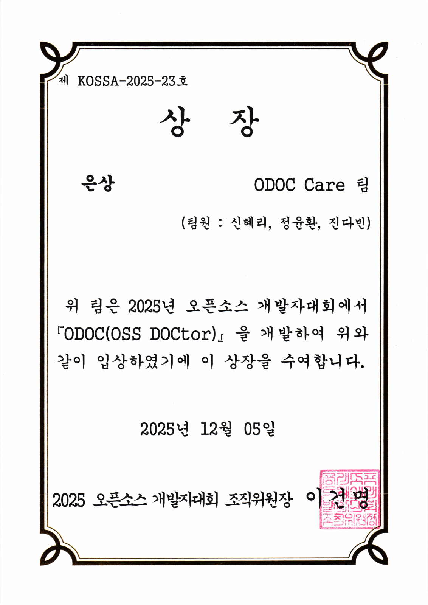
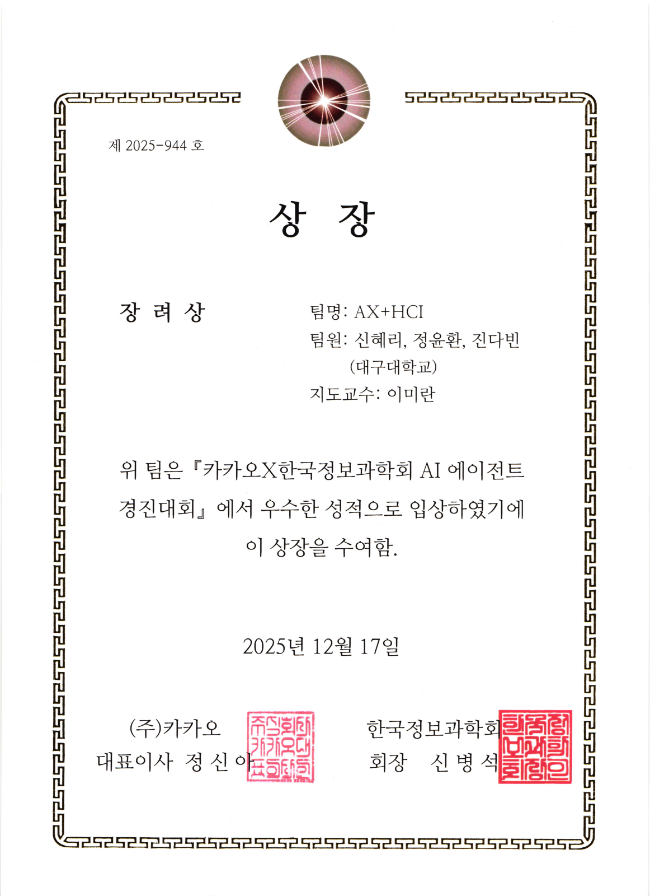
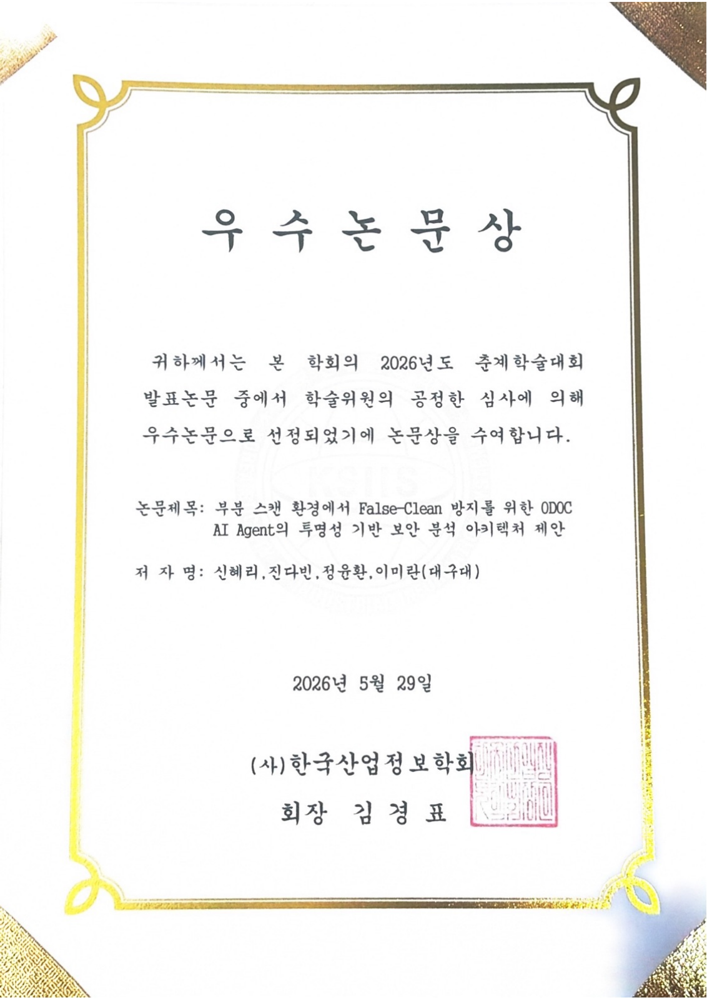
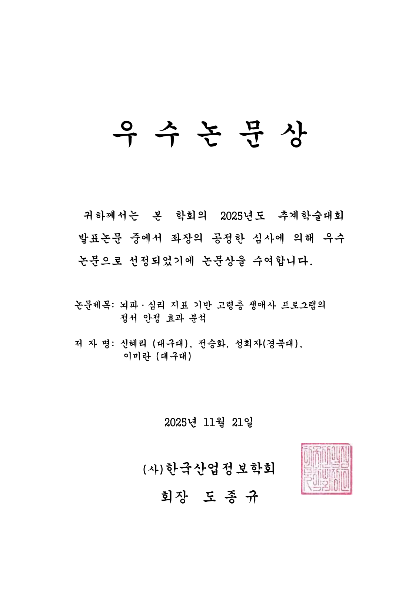
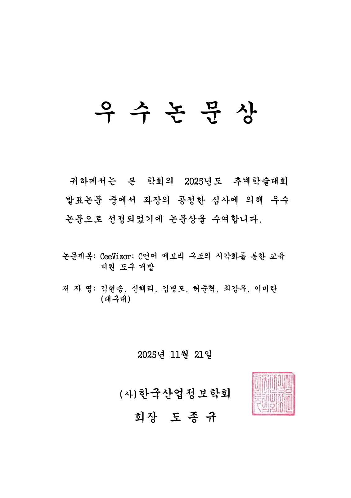
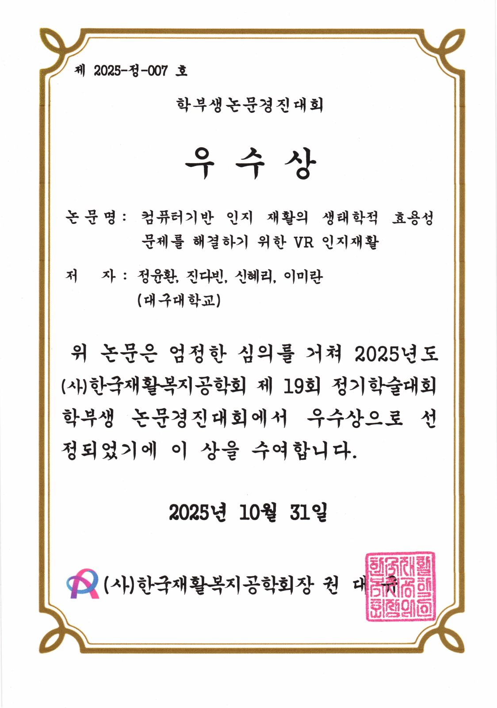
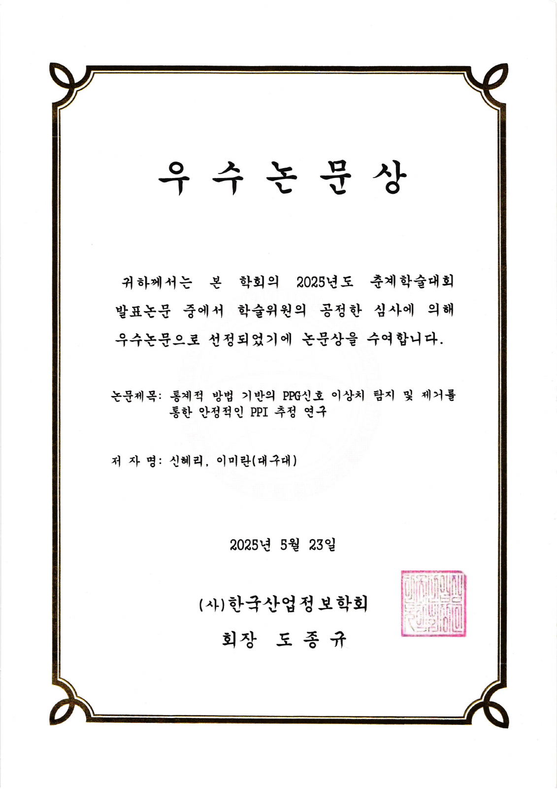

2025.12.05
오픈소스 개발자대회 은상
ODOC(OSS DOCtor) · ODOC Care 팀
신혜리·정윤환·진다빈
역할 · 팀 리더, 기획·개발 총괄
전체 상장 보기

팀 개발 · 공동 연구
개발대회 팀 수상 2건과 학술·논문 공동 수상 5건입니다.
수상별 참여 역할과 전체 상장을 함께 정리했습니다.
2025.12.05
ODOC(OSS DOCtor) · ODOC Care 팀
신혜리·정윤환·진다빈
역할 · 팀 리더, 기획·개발 총괄

2025.12.17
ODOC 후속 AI 확장 · AX+HCI 팀
신혜리·정윤환·진다빈 · 지도교수 이미란
역할 · 팀 리더, 상위 에이전트·진단·온보딩 설계·구현

연구별 논문 제목·공동저자·역할과 보유 원본 상장을 한곳에 모았습니다.
2026 한국산업정보학회 춘계학술대회
공동저자 · 신혜리·진다빈·정윤환·이미란
참여 역할 · 공동저자 · 공동 우수논문상
관련 ODOC 프로젝트에서는 Supervisor·진단·온보딩 기능의 설계·구현을 맡았습니다. 이후 졸업논문 연구를 위해 OSV 구조를 반영해 보안 분석을 확장했습니다.

2025 한국산업정보학회 추계학술대회
공동저자 · 신혜리·전승화·성희자·이미란
참여 역할 · 공동 연구 · 소프트웨어·검증·통계 분석

2025 한국산업정보학회 추계학술대회
공동저자 · 김현송·신혜리·김병모·허준혁·최강우·이미란
참여 역할 · 공동저자 · 공동 우수논문상

한국재활복지공학회 제19회 정기학술대회 학부생논문경진대회
공동저자 · 정윤환·진다빈·신혜리·이미란
참여 역할 · 공동저자 · 공동 논문 우수상

2025 한국산업정보학회 춘계학술대회
공동저자 · 신혜리·이미란
참여 역할 · 제1저자·발표

2026.02–
Entrepreneurial Lead(EL)로 국내·미국 고객·멘토 탐색, 팀의 서비스 방향 논의와 SaaS 개발을 진행하고 있습니다. 창업 피칭과 오픈소스 세미나에 참여하며 국내 동향도 살피고 있습니다.
고객 탐색과 현재 시도 →